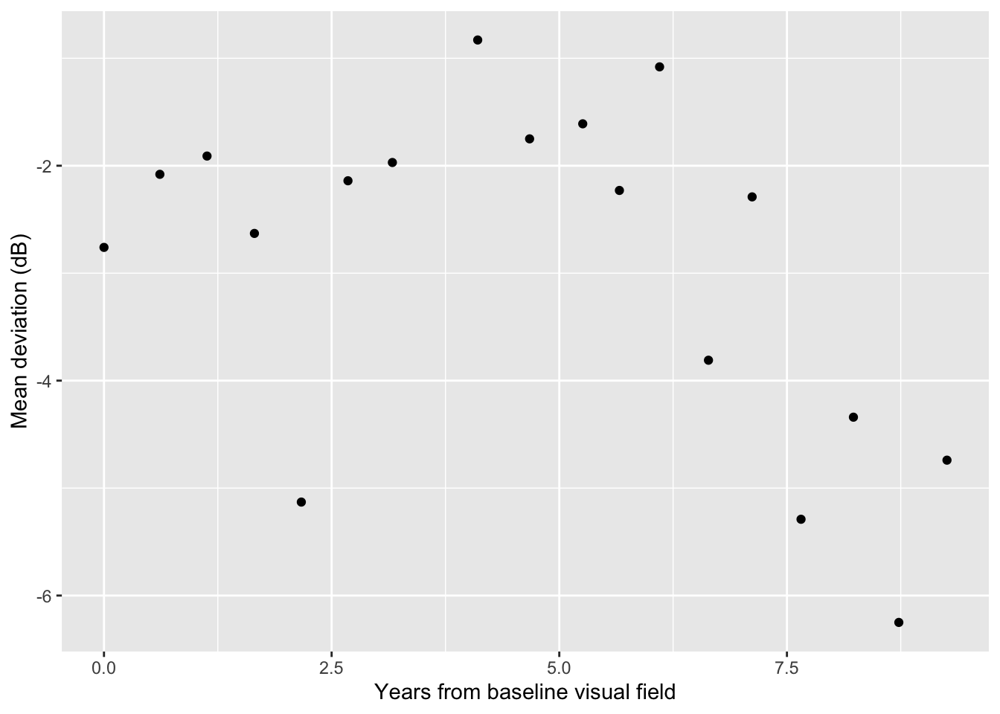

library(tidyverse) # data wrangling and visualization
library(knitr) # format output
library(rstan) # Stan
library(bayesplot) # figures for post Stan inference
library(loo) # model comparisonAE 05: Change point regression
Identifying glaucomatous disease progression
ImportantDue date
Application exercises (AEs) are submitted by pushing your work to the relevant GitHub repo. AEs from Tuesday lectures should be submitted by Friday by 11:59pm ET, and AEs from Thursday lectures should be submitted by Sunday at 11:59pm ET. Because AEs are intended for in-class activities, there are no extensions given on AEs.
- Final
.qmdand.pdffiles pushed to your GitHub repo - Note: For homeworks and exams, you will also be required to submit your final
.pdffile submitted on Gradescope
Getting Started
Clone the repo & start new RStudio project
- Go to the course organization at github.com/biostat725-sp26 organization on GitHub.
- Click on the repo with the prefix ae-05-. It contains the starter documents you need to complete the AE.
- Click on the green CODE button, select Use SSH (this might already be selected by default, and if it is, you’ll see the text Clone with SSH). Click on the clipboard icon to copy the repo URL.
- See the HW 00 instructions if you have not set up the SSH key or configured git.
- In RStudio, go to File \(\rightarrow\) New Project \(\rightarrow\) Version Control \(\rightarrow\) Git.
- Copy and paste the URL of your assignment repo into the dialog box Repository URL. Again, please make sure to have SSH highlighted under Clone when you copy the address.
- Click Create Project, and the files from your GitHub repo will be displayed in the Files pane in RStudio.
- Click
ae-05.qmdto open the template Quarto file. This is where you will write up your code and narrative for the AE.
R packages
We will begin by loading R packages that we will use in this AE.
Data

The data are on patients with glaucoma from the Rotterdam Ophthalmic Data Repository. Glaucoma is the leading cause of irreversible blindness world wide with over 60 million glaucoma patients as of 2012. Since impairment caused by glaucoma is irreversible, early detection of disease progression is crucial for effective treatment. Patients with glaucoma are routinely followed up and administered visual fields, a functional assessment of their vision. After each visual field test their current disease status is reported as a mean deviation value, measured in decibels (dB). Today we will work with the raw data from the Rotterdam repository. The data is available in the folder LongGlaucVF_20150216. During this AE, we work with the VisualFields.csv file. The file can be loaded as follows and we can explore the data.
dat <- read.csv(file = "/LongGlaucVF_20150216/VisualFields.csv")
head(dat) STUDY_ID FIELD_ID SITE MD AGE IOP
1 1 3 OD -7.69 18818 -1
2 1 4 OS -7.07 18818 -1
3 1 137 OD -9.95 19028 10
4 1 138 OS -5.03 19028 10
5 1 304 OD -9.58 19203 11
6 1 305 OS -6.38 19203 7We will focus on the following variables:
STUDY_ID: patient IDSITE: eye indicator,OD(right) andOS(left)MD: mean deviation in decibelsAGE: age of patient at time of visit (days)
Exploratory data analysis
In this AE, we will extract a longitudinal series of visual fields for an example patient’s eye. In order to do this, we must first create a ID variable that is eye-specific. This means accounting for both the patient ID and whether the MD value comes from the left or right eye.
dat <- dat[order(dat$STUDY_ID, dat$SITE), ]
dat$EYE_ID <- cumsum(!duplicated(dat[, c("STUDY_ID", "SITE")]))We will then extract longitudinal MD values for an example patient. In this AE, I choose eye 4
dat_pat <- dat[dat$EYE_ID == 4, ]We then format the data for analysis, including computing a time variable that is the number of years from baseline visit.
dat_pat$time <- (dat_pat$AGE - dat_pat$AGE[1]) / 365
dat_pat <- dat_pat[, c("time", "MD")]
colnames(dat_pat) <- c("X", "Y")We can then visualize the longitudinal series of mean deviation values for eye 4.
ggplot(dat_pat, aes(x = X, y = Y)) +
geom_point() +
scale_x_continuous(name = "Years from baseline visual field") +
scale_y_continuous(name = "Mean deviation (dB)")
Our goal is to fit a change point regression model to this eye’s data. We hope to balance both 1) fitting a flexible nonlinear model to the data and 2) achieving a clinically meaningful interpretation of disease progression.
Exercises
Exercise 1
For eye 4, fit a change point regression model. Present MCMC convergence diagnostics. Did the model converge?
Answer:
# add code hereExercise 2
Using the model from Exercise 1, present posterior estimates for model parameters. Provide an point and interval estimate for when this eye progressed.
Answer:
# add code hereExercise 3
Create a figure that plots the time since first visual field visit versus the mean deviation. Overlay the posterior mean process with a 95% credible band (similar to the figure on slide 32 from today). Also include a vertical line for the posterior mean estimate of the change point.
Answer:
# add code hereExercise 4
Now fit the change point model to eye 30. Did the MCMC sampler converge? To help answer this question, visualize the observed data for eye 30.
Answer:
# add code here(Optional) Exercise 5
Going back to eye 4, fit a new change point model where both the mean and variance process are modeled as having a change point, so that \(Y_i \stackrel{ind}{\sim} N(\mu(X_i),\sigma(X_i)^2)\), where
\[\log \sigma (X_i) =\left\{ \begin{array}{ll} {\gamma}_0 + \gamma_1 X_i & \text{ } \mbox{$X_i \leq \theta$},\\ {\gamma}_0 + \gamma_1 \theta + {\gamma}_2(X_i - \theta)& \text{ } \mbox{$X_i > \theta.$}\end{array} \right.\]
Present posterior summaries for each parameter and create a visualization of the posterior standard deviations across time.
Answer:
# add code here
Important
To submit the AE:
- Render the document to produce the PDF with all of your work from today’s class.
- Push all your work to your AE repo on GitHub. You’re done! 🎉